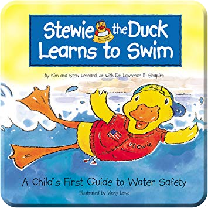
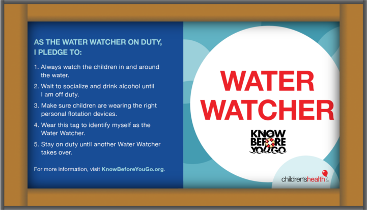
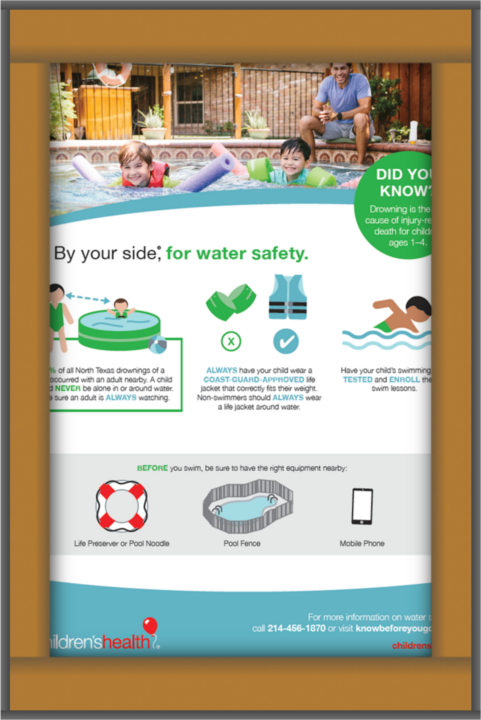

Resources
*Order your water safety packet, which includes a coloring book, brochure, and water watcher tag (English or Spanish) – Email us at KBYG@childrens.com
Water Saftey Books
These books are helpful tools to teaching your child about the importance of water safety.

Water Saftey Videos
Top 5 Water Safety Tips
Swimming Lessons
Pool Safety Fencing
Water Watcher Tag
Any time children are in the pool, designate an adult to be the Water Watcher. This dedicated observer must commit to
actively supervising children in the water at all times; not texting, reading, socializing, drinking, etc.
Download a water watcher tag today or email KBYG@childrens.com to request one be sent to you free-of-charge in the mail.

Water Safety Brochure
Download here
Water Safety Tip Sheet
Download a water safety tip sheet here
.